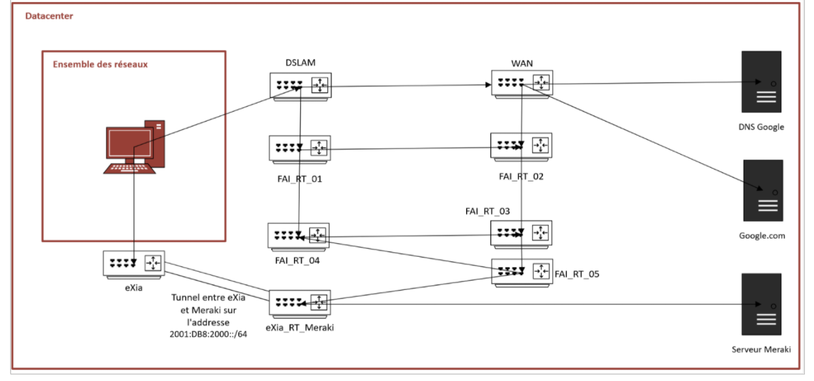
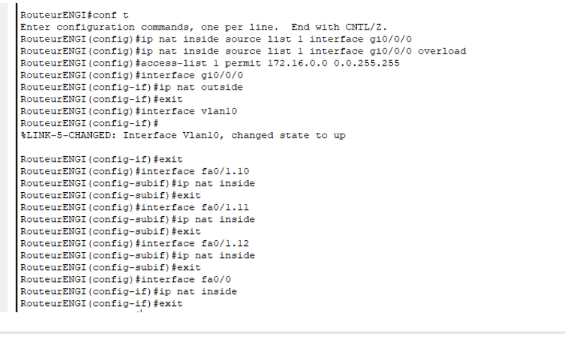

Dans ce projet, j'ai pris le rôle de chef de projet au sein d'une équipe de 4 personnes. J’ai configuré l’ensemble du réseau d’une ville tout en apportant des modifications à une partie du réseau existant. J’ai également veillé à la sécurisation du réseau en respectant un cahier des charges propre à chaque zone de la ville.

Voici l’un des schémas que j’ai réalisés, représentant le réseau maillé du Datacenter.

Voici l'une des configurations NAT que j’ai mises en place pour une section du réseau de la ville.
Ce projet s’est conclu par une présentation orale devant un jury, au cours de laquelle j’ai exposé la démarche, les choix techniques ainsi que les résultats obtenus. Cet exercice m’a permis de développer mes compétences de communication, ma capacité à structurer un discours technique, et à répondre avec clarté aux questions posées.